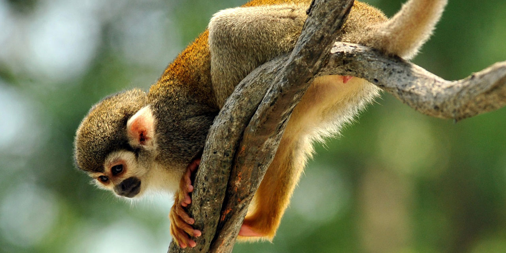
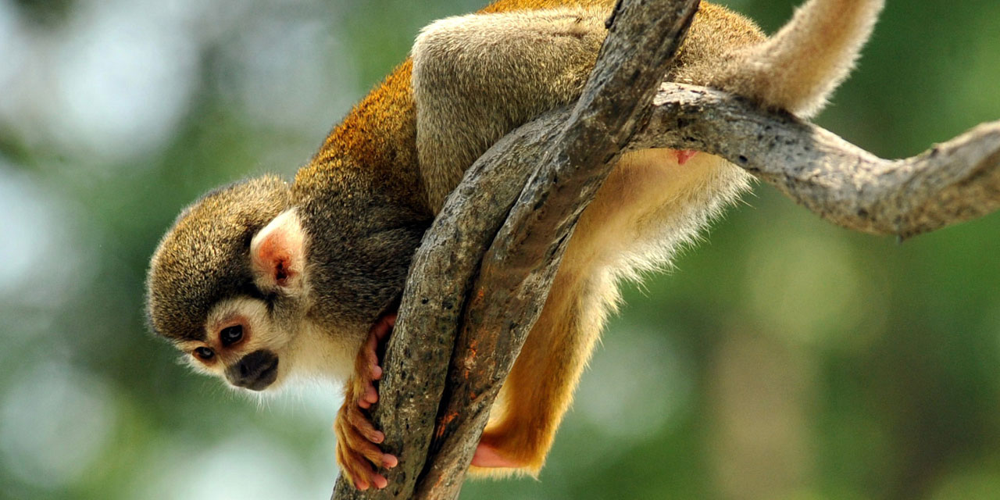
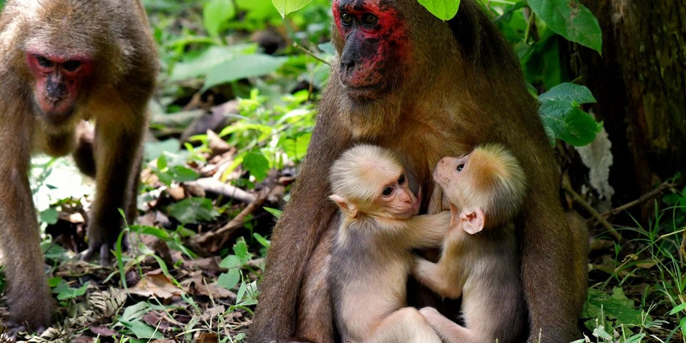
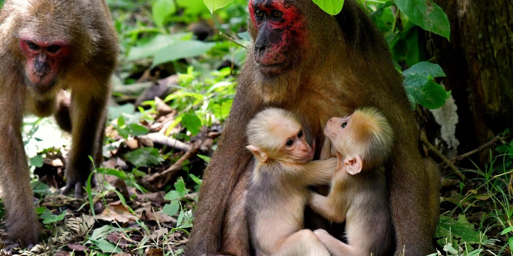

Les singes sont des mammifères de l'ordre des primates, généralement arboricoles, à la face souvent glabre et caractérisés par un encéphale développé et de longs membres terminés par des doigts. Bien que leur ressemblance avec l'Homme ait toujours frappé les esprits, la science a mis de nombreux siècles à prouver le lien étroit qui existe entre ceux-ci et l'espèce humaine.
Au sein des primates, les singes forment un infra-ordre monophylétique, si l'on y inclut le genre Homo, nommé Simiiformes et qui se divise entre les singes du « Nouveau Monde » (Amérique centrale et méridionale) et ceux de l'« Ancien Monde » (Afrique et Asie tropicales). Ces derniers comprennent les hominoïdes, également appelés « grands singes », dont fait partie Homo sapiens et ses ancêtres les plus proches.
Même s'il ne fait plus de doute aujourd'hui que « l'Homme est un singe comme les autres », l'expression est majoritairement utilisée pour parler des animaux sauvages, et évoque un référentiel culturel, littéraire et artistique qui exclut l'espèce humaine.

 


 
